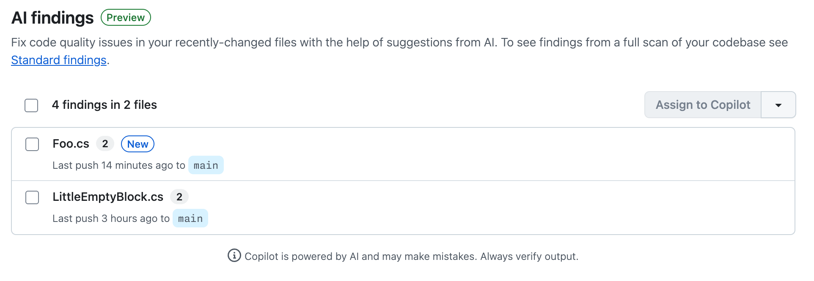
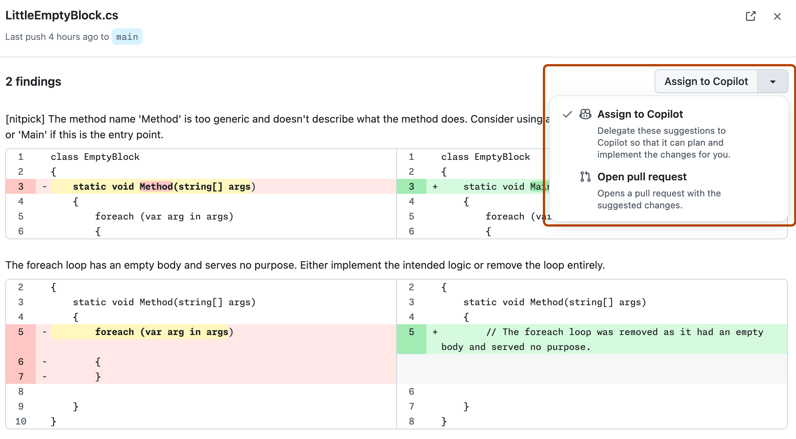
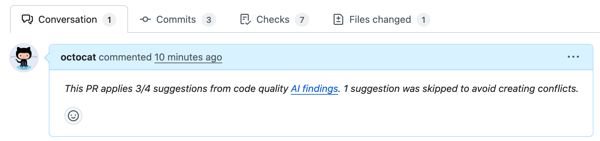

Explore GitHub Code Quality findings for recently merged code and fix with Copilot Autofix or delegate remediation work to Copilot cloud agent.
Note
GitHub Code Quality is currently in public preview and subject to change.
During public preview, Code Quality will not be billed, although Code Quality scans will consume GitHub Actions minutes.
This tutorial shows you how to explore and remediate quality issues that have been detected by Code Quality's AI-powered analysis of code that was recently merged into your default branch.
When you improve quality of recently merged files, you reduce technical debt in the repository and make it easier for other developers to work on files that are under active development.
Code Quality scans pull requests and comments on quality concerns, then runs a second AI scan after the pull request is merged. The two types of scan use complementary technologies:
Pull request scans use CodeQL rules to identify problems. This analysis is thoroughly tested, good at identifying where code doesn't match the quality rules, and can analyze many files. However, it supports a subset of coding languages and cannot identify problems where there is no rule.
Recently merged file scans use a large language model to analyze your most recently changed files and report findings for up to 5 files. This analysis examines your code across all languages, without being limited by rules, and provides contextual insights and suggestions that can go beyond what CodeQL rules offer.
After a Code Quality scan of the recently merged files on your default branch, you can see the results under the AI findings view, which displays findings for up to 5 files.
Note
This view is empty if the repository is inactive or if LLM analysis could not suggest ways to improve code quality in recent pushes to the default branch.
On the AI findings page, each file is listed with the number of quality problems identified and when the file was pushed to the default branch.

You can open a pull request to apply the suggested autofixes to a file or delegate the remediation work to Copilot cloud agent. You need a Copilot license to assign work to Copilot cloud agent.
Sign up for Copilot
You can ask cloud agent to open pull requests to make improvements to files using the suggested changes as a prompt. This is the best option if the suggested changes look good to you and you want to open a pull request that applies fixes to more than one file.
To delegate pull request creation:
There is a delay while the cloud agent sets up the work. When the pull request is open and work is in progress, a banner is displayed with a link to the pull request.
You can track Copilot cloud agent's work:
You can open pull requests yourself to apply autofix suggestions. This is the best option if:
Note
When you open a pull request yourself, you can only commit fixes to one file at a time. To fix multiple files at once, you must use Copilot cloud agent.
Click the file name to view details of the quality problems detected.
Review the problems and suggested fixes.
Expand the Assign to Copilot drop-down and then click Open pull request to change the default option to "Open pull request". Your preference is remembered.

Click Open pull request to open a dialog of commit options.
Click Commit change to create a pull request with the fixes.
Providing context on why you are proposing changes to code is the best way to encourage team members to review your pull request. If you used Copilot cloud agent, the pull request summary already includes full details of the problems fixed by the pull request.
If you opened the pull request directly from the GitHub Code Quality view, the pull request summary links to the "AI findings" view. You may want to copy some of the explanations from the AI findings view into the pull request summary.

When you return to the "AI findings" view after merging your pull request, the findings you fixed are no longer listed.